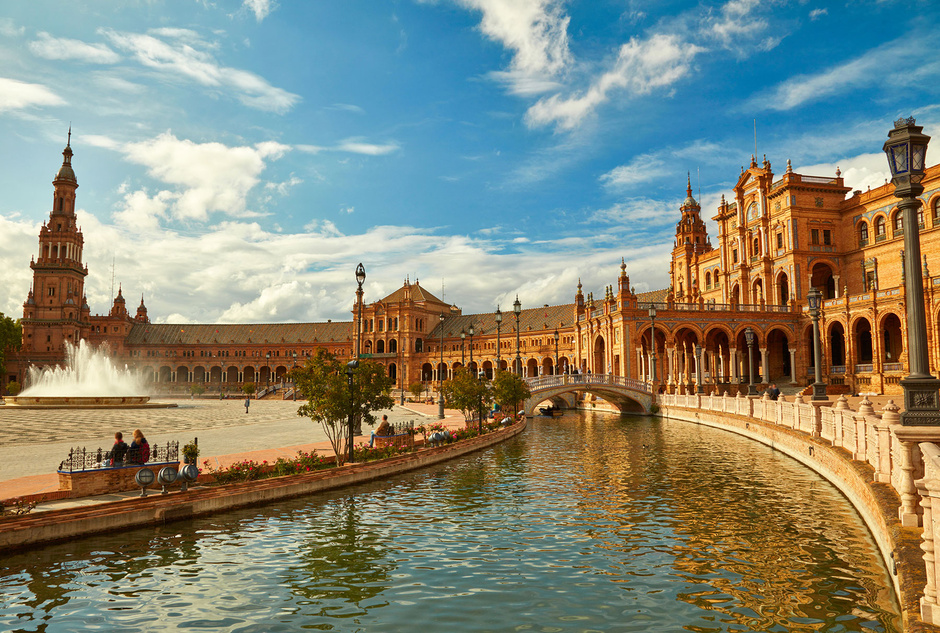
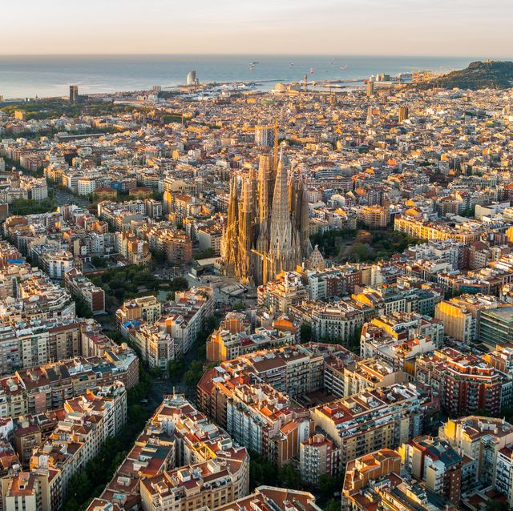

PÁGINA PRINCIPAL
MADRID
SEVILLA
BARCELONA
España, también denominado Reino de España, nota es un país soberano transcontinental, constituido en Estado social y democrático de derecho y cuya forma de gobierno es la monarquía parlamentaria. Es uno de los veintisiete Estados soberanos que forman la Unión Europea. Su territorio, con capital en Madrid, está organizado en diecisiete comunidades autónomas, formadas a su vez por cincuenta provincias, y dos ciudades autónomas.
España se sitúa principalmente en el suroeste de Europa, si bien también tiene presencia en el norte de África. En Europa, ocupa la mayor parte de la península ibérica, conocida como España peninsular, y las islas Baleares (en el mar Mediterráneo). En África se hallan las ciudades de Ceuta y Melilla, las islas Canarias (en el océano Atlántico) y varias posesiones mediterráneas denominadas «plazas de soberanía». El municipio de Llivia, en los Pirineos, constituye un exclave rodeado totalmente por territorio francés. Completa el conjunto de territorios una serie de islas e islotes frente a las propias costas peninsulares.

Madrid es un municipio y una ciudad de España. La localidad, con categoría histórica de villa, es la capital
del Estado y de la Comunidad de Madrid. En su término municipal, el más poblado de España, están
empadronadas 3 280 782 personas (INE 2022), constituyéndose como la segunda ciudad más poblada de la Unión
Europea, así como su área metropolitana, con 6 779 888 habitantes empadronados.
Cuenta con un PIB nominal de 133 129 millones de euros —el 12 % del PIB nacional— y un PIB per cápita
nominal de 41 600 € (2018), siendo la 1.ª área metropolitana española en actividad económica −19 % del PIB.
Es también la primera en más pernoctaciones hoteleras.1
Como capital de España, alberga las sedes del Gobierno de la Nación y sus departamentos ministeriales, de
las Cortes Generales (Congreso de los Diputados y Senado), del Tribunal Supremo y del Tribunal
Constitucional, así como la residencia oficial de los reyes de España y del presidente del Gobierno.

Sevilla es un municipio y una ciudad de España, capital de la provincia homónima y de Andalucía. Contaba con 684 164 habitantes en 2023, por lo que es la ciudad más poblada de Andalucía, la cuarta de España según los datos oficiales del INE. El municipio tiene una superficie de 141,4 km². El área metropolitana de Sevilla está compuesta por 46 municipios, incluye a una población de 1 548 741 habitantes (INE 2020) y ocupa una superficie de 4905,04 km². Sevilla, al disponer de su Real Alcázar, es una de las cuatro ciudades donde la familia real española tiene residencia oficial, junto con Madrid, Barcelona y Palma.
Su casco antiguo, con 3,9 km², es el más extenso de España y el sexto más grande de Europa, tras los de Roma (14,6 km²), Nápoles (10,3 km²), Venecia (7,6 km²), Florencia (5,5 km²) y Génova (4,1 km²). Sevilla es una de las ciudades con más monumentos catalogados en Europa. Su casco histórico es uno de los mayores de España (nótese la diferencia entre casco antiguo, que solo incluye la zona histórica anterior a la Revolución Industrial, y casco histórico, que abarca estadios posteriores). Su patrimonio histórico y monumental y sus diversos espacios escénicos y culturales la constituyen en ciudad receptora de turismo nacional e internacional. Es la tercera ciudad de España por número de visitantes, tras Barcelona y Madrid. Entre sus monumentos más representativos se encuentran la catedral (que incluye la Giralda), el Alcázar, el Archivo de Indias y la Torre del Oro, los tres primeros declarados Patrimonio de la Humanidad por la Unesco en 1987.

Barcelona es una ciudad española, capital de la comunidad autónoma de Cataluña, de la provincia homónima y de la comarca del Barcelonés. Con una población de 1 660 435 habitantes a enero de 2023, es la segunda ciudad más poblada de España y de la península ibérica después de Madrid, y la décima de la Unión Europea. Su ámbito metropolitanonota cuenta con una población de 5 575 204 habitantes según Eurostat, siendo así la quinta aglomeración urbana de mayor población y la más densamente poblada de la Unión Europea.
Cuenta con un PIB nominal de 142 223 millones € y un PIB per cápita nominal de 30 619 €, lo que representa un PIB PPA per cápita de 36 240 €, siendo la segunda área metropolitana española en actividad económica y la decimoséptima europea después de Londres, París, Rin-Ruhr, Ámsterdam, Milán, Bruselas, Moscú, Fráncfort del Meno, Múnich, Madrid, Berlín, Viena, Roma, Copenhague, Estocolmo y Birmingham.
